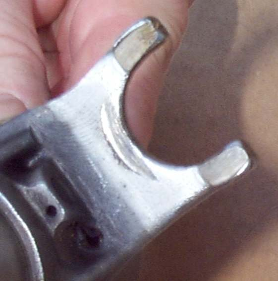
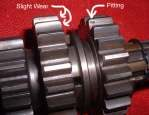

You are accelerating or climbing in a gear and it suddenly drops out, usually to neutral, and the engine revs. It often happens in the same gear every time. A gear is held in by its dogs (square teeth on the side of the gear) locking into slots on the next gear, and by a spring-loaded stopper arm that holds the drum in place. When the dogs round off, a fork wears or the stopper spring weakens, the load pushes the gear out. Before blaming the gearbox, rule out anything that stops the lever completing each change.
Is it safe to ride?
Ride gently, straight to a workshop. A sudden loss of drive can throw you off balance, and each jump wears the dogs further. Avoid hard acceleration and steep hills with a passenger or load. Do not hold the lever with your foot as a fix.
Quick checks first
- Is it always the same gear?
- Does your foot rest on the lever while riding?
- Is the lever loose, bent or touching anything?
- Was the bike dropped on the gear lever side?
Diagnose it step by step
1Is your boot resting on the gear lever, or is the lever touching the footpeg or case?
- Yes: move your foot clear and reset the lever height. Check the gear lever and shift linkage.
- No: go to step 2.
2Does the lever move on its shaft, or is it bent so it cannot complete the stroke?
- Yes: Refit or replace the gear lever.
- No: go to step 3.
3On a linkage, are the ball joints worn or the rod bent?
- Yes: Check the gear lever and shift linkage.
- No: go to step 4.
4Do you change with a full, firm stroke and the clutch fully released? Does it still jump?
- Yes, it still jumps: the fault is inside the engine. Go to step 5.
- No, it stopped: an incomplete change was leaving the dogs only partly engaged.
5Workshop: does the stopper arm spring or shift spindle return spring show weakness or breakage (checked behind the clutch cover)?
- Yes: replacing the spring is the cheapest internal repair.
- No: the gearbox must be opened to check how far each gear engages, the dog and slot shapes, the splines and the fork wear. Go to Assess internal gearbox faults.
What happens if you keep riding it: each jump rounds the dogs further, so the gear jumps more easily, and a worn fork can overheat and break. A small repair (spring) becomes a large one (gears and forks).
Causes, most likely first
| Cause | How to confirm | Fix |
|---|---|---|
| Foot resting on lever or lever obstructed | Visible; stops when foot moved | Check the gear lever and shift linkage |
| Loose or bent lever | Lever moves on shaft or misses stroke | Refit or replace the gear lever |
| Weak or broken stopper arm spring | Workshop check behind clutch cover | Assess internal gearbox faults |
| Rounded dogs, flared slots | Gearbox opened | Assess internal gearbox faults |
| Worn or bent fork, worn drum groove | Measured against limits | Assess internal gearbox faults |